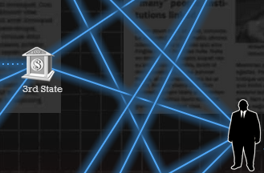
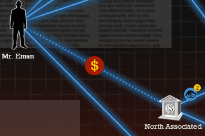

Set-up
Players begin by choosing their side; either the State or the Terrorist Funding Organization. Once chosen, they are presented with a financial network of known banking institutions that are involved with the handling and transferal of money.
Game Play
The State will manage a team of expert agents who are trained to identify and interact with terrorist-related money transfers. As money is followed, more of the network is discovered which ultimately leads to the terrorist parties involved.
The Terrorist Funding Organizaion takes the opposite seat. Their purpose is to use the financial network and knowledge of the State agents, to determine the best money transfer routes for money to reach the terrorist cells.

End Goal
If the State can prevent enough money from reaching the terrorist cell, or has discovered and apprehended the terrorist leader, the terrorist event will be averted!